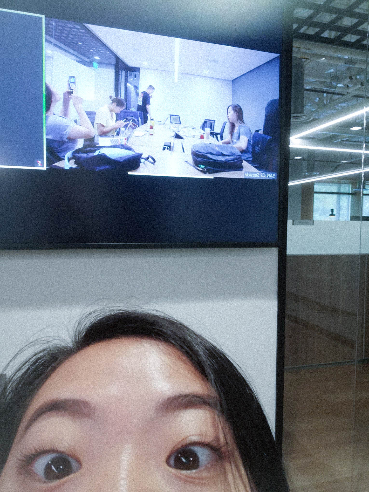
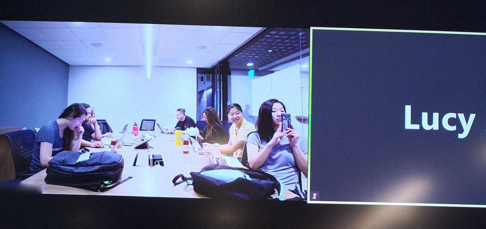
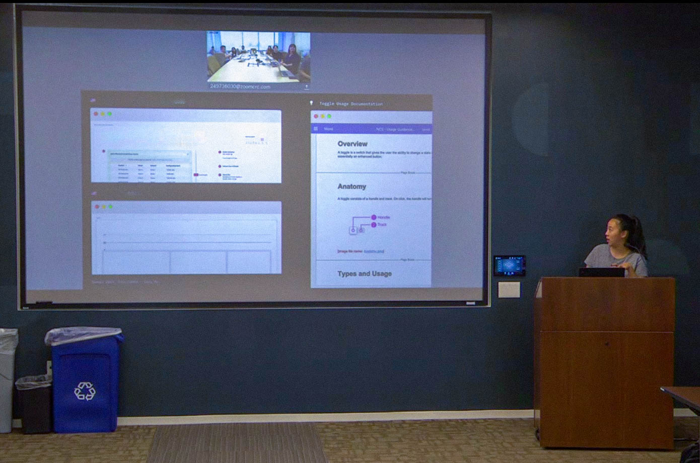

UX Visual Design Intern
Skills
visual design
product design
Overview
The summer of my junior year, I was fortunate enough to spend 3 months as a visual design intern on ServiceNow’s design systems team. I had the pleasure of working with and supporting multiple teams to create new components and design icons.
Most of my work is protected, please feel free to contact me for more info!
on ServiceNow's design system team
Time
12 weeks
Summer 2019
[Above pictures] Me, giving my exit presentation during the last week of my internship
